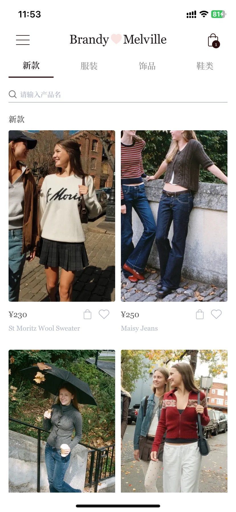
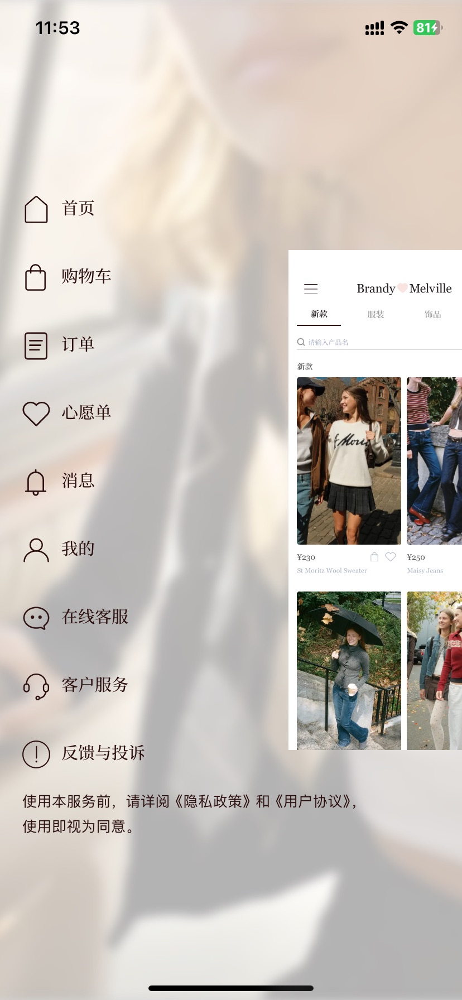
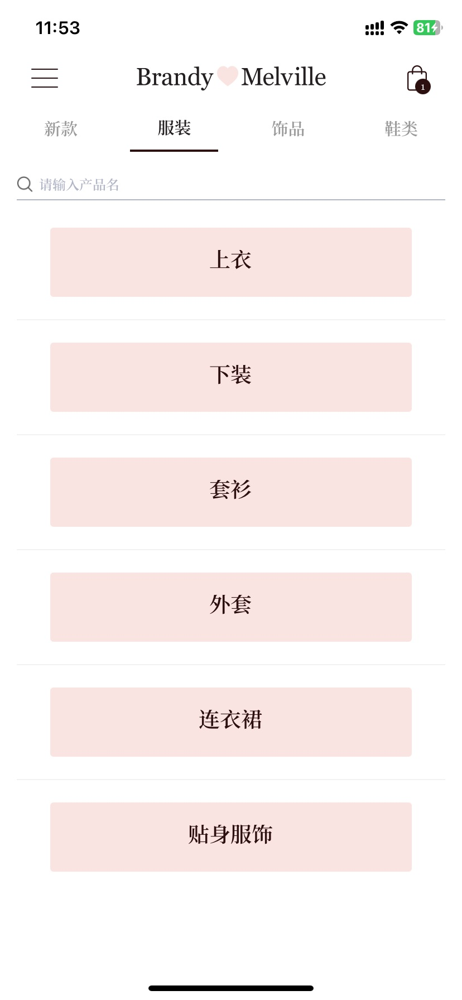
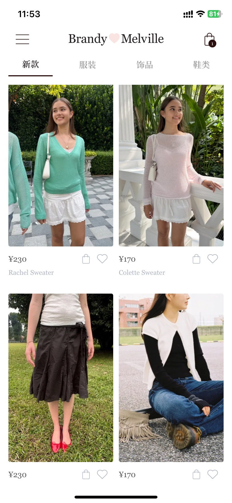
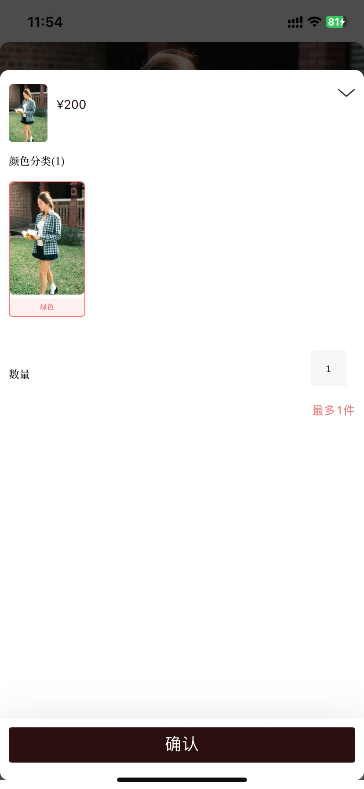

视觉设计高度克制，品牌审美与产品体验深度统一
现象
常见电商 / 多重运营信息
Brandy Melville / 视觉聚焦让商品图片成为主角
弱营销干扰 · 统一 UI 与摄影风格
用户场景
像翻阅一本 Lookbook，在没有明确购物任务时，沉浸式感受穿搭氛围。
为什么重要
审美氛围是种草核心。减少信息打断与认知负担，保留对风格的感知。
做得好的本质
界面本身，就是品牌表达。剥离无关信息，让注意力回到款式与穿搭，用一致的页面设计传递品牌调性。
价值品牌塑造商品种草激发购买欲